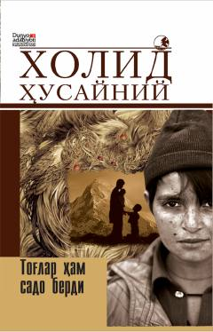

THUrush va insoniy taqdirlar haqidagi ta'sirli roman.
Ushbu roman urush va ijtimoiy muhit insonlar taqdirini qanday o'zgartirishi haqida hikoya qiladi. Asar turli qahramonlar hayoti orqali insoniy kechinmalar, vijdon azobi va oilaviy rishtalar mavzusini yoritib beradi.